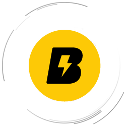

Besnow Cloud 貝雪雲官方入口導航
請加入書籤收藏本頁；官網地址、備用地址與公告頻道以置頂訊息為準
常見問題 FAQ
為何需要這個官方入口導航？
這是 Besnow Cloud 貝雪雲唯一的官方入口發布頁，用於同步主站與備用地址，避免搜尋結果混入釣魚站。請先將本頁加入書籤（Ctrl+D / ⌘+D），並以公告頻道置頂訊息為準。
操作建議：先開啟主官網 besnow.org，若遇網絡封鎖再點擊下方備用地址 I / II，並定期回到書籤中的本頁確認公告頻道的最新置頂。
貝雪雲 / 贝雪云官網地址是甚麼？
Besnow Cloud 貝雪雲官方主站為 besnow.org；如主站暫時無法開啟，可從本頁使用備用地址 I / II，並以 Telegram 公告頻道置頂訊息為準。常見搜尋如「贝雪云官网」「貝雪雲地址」「Besnow Cloud official site」，均請以本頁公布的入口為準。
如何辨認仿冒網站？
常見仿冒特徵包括：域名拼寫接近但不完全相同、要求私下轉帳、索取密碼／驗證碼、冒充客服私訊、要求安裝不明 App 或遠端控制。遇到任何可疑情況，請不要登入、不要付款，先回到本頁核對官方入口與公告頻道置頂訊息。
為何要收藏本頁，而不是只記住主站？
主站適合日常登入與使用；本頁則用於防遺失、防釣魚與同步備用入口。當主站受網絡環境影響暫時無法開啟時，可先回到書籤中的本頁，再依公告頻道置頂訊息選擇可用入口。
如何做安全核驗防釣魚？
請按以下流程核驗，並以書籤中的本頁與公告頻道置頂訊息交叉檢查：
- 第一步：確認域名只來自白名單：address.besnow.xyz、besnow.org、besnow.me、besnow.us、t.me/Besnow_Cloud、t.me/Besnow_L。
- 第二步：確認瀏覽器 HTTPS 鎖頭與憑證有效，若憑證異常請立即停止操作。
- 第三步：從書籤重新打開本頁，再點擊本頁提供的官方入口或 Telegram 公告頻道。
- 第四步：如遇私訊索取密碼、驗證碼、付款截圖或要求遠端控制，一律視為高風險並立即停止。
主站打不開時怎麼處理？
結論：直接使用備用地址 I / II，它會在點擊時隨機分配可用子域提升命中率。操作：點擊按鈕→待跳轉→若仍受阻，切換網絡或稍後重試，並留意公告頻道置頂訊息。請把本頁加到書籤以便回來重試。
如何收藏避免遺失？
請立即按 Ctrl+D（Mac 按 ⌘+D）或使用手機瀏覽器的「加入書籤／添加到主畫面」功能收藏本頁，並在公告頻道開啟置頂訊息通知，之後只需從書籤打開即可隨時核對最新入口。
入口多久會更新？
只要偵測到網絡環境變化或節點受阻，備用地址的隨機子域池會即時調整並在公告頻道置頂同步。本頁內容也會更新，請以書籤回訪並查看公告置頂訊息。
隨機子域跳轉是否安全？
備用地址 I / II 會在點擊時才生成隨機子域，全部都在 besnow.me / besnow.us 主域下並使用有效 HTTPS 憑證。若瀏覽器提示憑證異常請立即停止，透過書籤回到本頁並核對公告頻道置頂訊息。
如何查看官方公告與加入群組？
點擊「官方群組」「公告頻道」按鈕會在新分頁開啟 Telegram；公告頻道置頂訊息會同步最新地址與安全提示，群組供交流回饋。請將本頁加入書籤並定期按公告置頂訊息操作。